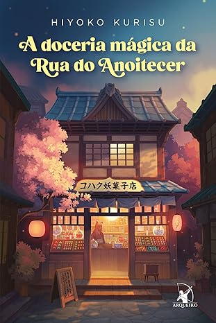
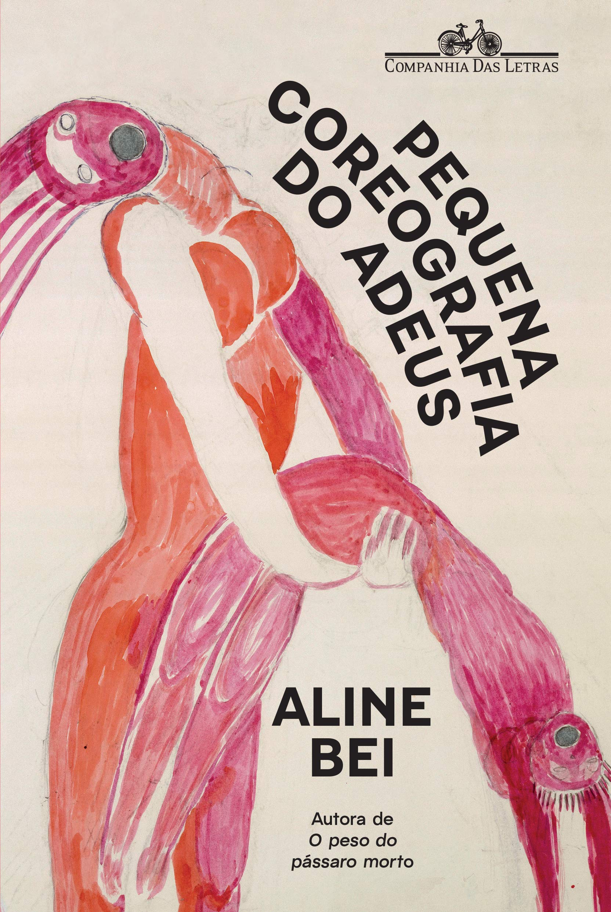

Blog Literário
Descubra leituras marcantes, emocionantes e cheias de significado para acompanhar cada fase da sua vida.
-
.webp)
Em Outra Vida, Talvez?
Hannah descobre que pequenas escolhas podem mudar completamente o rumo da vida, explorando realidades diferentes e possibilidades do destino.
-
.webp)
A Biblioteca da Meia-Noite
Nora encontra uma biblioteca entre a vida e a morte, onde pode viver versões diferentes de sua própria história e repensar suas escolhas.
-

A Empregada
Ao trabalhar para uma família aparentemente perfeita, segredos sombrios começam a surgir em um suspense cheio de tensão e reviravoltas.
-
.webp)
A Morte é um Dia que Vale a Pena Viver
Uma reflexão sensível sobre a finitude da vida, mostrando como compreender a morte pode transformar a forma de viver.
-

A Doceria Mágica da Rua do Anoitecer
Uma doceria especial onde doces carregam emoções e ajudam pessoas a lidar com seus sentimentos e recomeçar.
-

A Pequena Coreografia do Adeus
Uma história delicada sobre perdas, despedidas e o processo de reconstrução emocional ao longo da vida.
-
A Última Carta
Uma história emocionante sobre amor, perdas e segredos revelados através de uma carta que muda tudo.
-
.webp)
É Assim Que Acaba
Lily vive um relacionamento intenso que a faz confrontar o passado e refletir sobre amor, limites e ciclos difíceis de quebrar.
-
.webp)
A Hora da Estrela
A trajetória simples e invisível de Macabéa revela, com profundidade, as desigualdades e a solidão da existência.